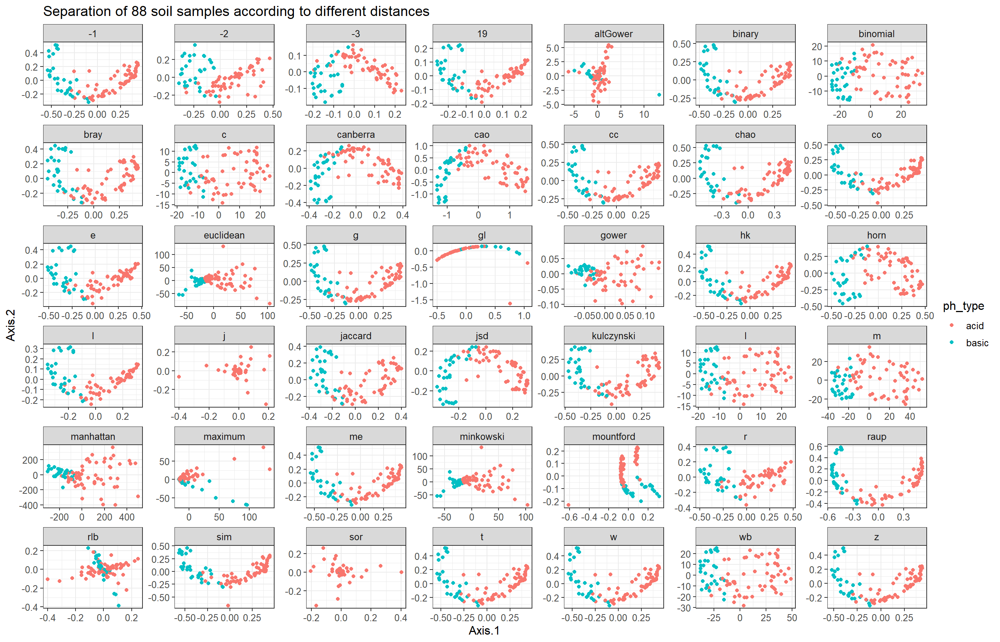

library(phyloseq)
library(dplyr)
library(ggplot2)
soil <- readRDS("data/soil_processed/soil.RDS")Exploratory analysis of compositional data (part II)
Exploratory analysis of a microbial data set
Here we use the “88 soils” data set (Lauber et al. 2009) containing bacterial communities in 88 soils from across North and South America.
Load packages and data data
Take a look at the data
soilphyloseq-class experiment-level object
otu_table() OTU Table: [ 116 taxa and 89 samples ]
sample_data() Sample Data: [ 89 samples by 1 sample variables ]
tax_table() Taxonomy Table: [ 116 taxa by 7 taxonomic ranks ]# Read count table
otu_table(soil)[1:10, 1:6]OTU Table: [6 taxa and 10 samples]
taxa are columns
1124701 697997 203969 205391 843189 3431064
103.CA2 15 2 0 0 0 3
103.CO3 14 4 0 0 0 1
103.SR3 1 0 0 0 0 1
103.IE2 8 0 0 1 0 0
103.BP1 13 67 0 0 0 3
103.VC2 7 0 0 1 0 7
103.SA2 6 1 0 0 0 0
103.GB2 3 3 0 0 0 0
103.CO2 2 0 0 1 0 5
103.KP1 2 1 0 0 0 1# Taxonomy table
taxtab <- tax_table(soil)
head(taxtab)Taxonomy Table: [6 taxa by 7 taxonomic ranks]:
Kingdom Phylum Class
1124701 "k__Bacteria" "p__Bacteroidetes" "c__[Saprospirae]"
697997 "k__Bacteria" "p__Acidobacteria" "c__[Chloracidobacteria]"
203969 "k__Bacteria" "p__Acidobacteria" "c__DA052"
205391 "k__Bacteria" "p__Acidobacteria" "c__Solibacteres"
843189 "k__Bacteria" "p__Acidobacteria" "c__Solibacteres"
3431064 "k__Bacteria" "p__Gemmatimonadetes" "c__Gemmatimonadetes"
Order Family Genus
1124701 "o__[Saprospirales]" "f__Chitinophagaceae" "g__"
697997 "o__RB41" "f__" "g__"
203969 "o__Ellin6513" "f__" "g__"
205391 "o__Solibacterales" "f__" "g__"
843189 "o__Solibacterales" "f__Solibacteraceae" "g__Candidatus Solibacter"
3431064 "o__N1423WL" "f__" "g__"
Species
1124701 "s__"
697997 "s__"
203969 "s__"
205391 "s__"
843189 "s__"
3431064 "s__" # Sample data
sampdata <- sample_data(soil)
head(sampdata) ph
103.CA2 8.02
103.CO3 6.02
103.SR3 6.95
103.IE2 5.52
103.BP1 7.53
103.VC2 5.99Microbial composition
We first have a look at the microbial compositions on phylum level.
soil_phyla <- tax_glom(soil, taxrank = "Phylum")Stacked bar plot of the observed “absolute” abundances:
plot_bar(soil_phyla, fill = "Phylum")
Stacked bar plot of the relative abundances:
# Compute relative abundances
otutab <- otu_table(soil_phyla)
otutab <- sweep(otutab, 1, FUN = `/`, rowSums(otutab))*100
soil_phyla@otu_table@.Data <- otutabplot_bar(soil_phyla, fill = "Phylum")Distance calculation and visualization
Distance functions provided by the phyloseq package:
dist_methods <- unlist(distanceMethodList)
dist_methods UniFrac1 UniFrac2 DPCoA JSD vegdist1 vegdist2
"unifrac" "wunifrac" "dpcoa" "jsd" "manhattan" "euclidean"
vegdist3 vegdist4 vegdist5 vegdist6 vegdist7 vegdist8
"canberra" "bray" "kulczynski" "jaccard" "gower" "altGower"
vegdist9 vegdist10 vegdist11 vegdist12 vegdist13 vegdist14
"morisita" "horn" "mountford" "raup" "binomial" "chao"
vegdist15 betadiver1 betadiver2 betadiver3 betadiver4 betadiver5
"cao" "w" "-1" "c" "wb" "r"
betadiver6 betadiver7 betadiver8 betadiver9 betadiver10 betadiver11
"I" "e" "t" "me" "j" "sor"
betadiver12 betadiver13 betadiver14 betadiver15 betadiver16 betadiver17
"m" "-2" "co" "cc" "g" "-3"
betadiver18 betadiver19 betadiver20 betadiver21 betadiver22 betadiver23
"l" "19" "hk" "rlb" "sim" "gl"
betadiver24 dist1 dist2 dist3 designdist
"z" "maximum" "binary" "minkowski" "ANY" MDS plot with Bray Curtis distance
soil_mds <- ordinate(soil, method = "MDS", distance = "bray")First a plot without coloring metadata.
mds_soil <- plot_ordination(soil, soil_mds, title = "MDS of 88 soil data")No available covariate data to map on the points for this plot `type`mds_soil + theme_bw() + theme(text = element_text(size = 14)) + geom_point(size = 3)One could identify two main clusters, separated by the first axis.
We now build two pH categories (acidic and basic) and color the samples in the MDS plot accordingly.
# Add categorical variable to the data frame
sampdata$ph_type <- as.factor(ifelse(sampdata$ph < 6.7, "acid", "basic"))
head(sampdata) ph ph_type
103.CA2 8.02 basic
103.CO3 6.02 acid
103.SR3 6.95 basic
103.IE2 5.52 acid
103.BP1 7.53 basic
103.VC2 5.99 acidtable(sampdata$ph_type)
acid basic
59 30 Add the new data frame to the phyloseq object.
sample_data(soil) <- sampdatamds_soil <- plot_ordination(soil, soil_mds, color = "ph_type",
title = "MDS of 88 soil data colored by pH type")
mds_soil + theme_bw() + theme(text = element_text(size = 14)) + geom_point(size = 3)Indeed, pH type separates samples along Axis.1.
MDS plots for several distance measures
Now, we apply all available distance functions to the data, compute the corresponding MDS embeddings, and plot them.
First, we have to remove the unwanted distances.
filtered_methods <- dist_methods[!dist_methods %in% c("unifrac", "wunifrac",
"dpcoa", "ANY", "morisita")]Now we can apply these distance metrics to our data.
gather_ordination_data <- function(d_method, phylo_obj){
# Calculate the MDS matrix using the distance
ordinate_obj <- ordinate(phylo_obj, method = "MDS", distance = d_method)
# Get the data for plotting
plot_data <- plot_ordination(phylo_obj, ordinate_obj)$data
# Add a column for distance
plot_data$distance <- d_method
return(plot_data)
}
mds_plot_data <- bind_rows(lapply(filtered_methods, gather_ordination_data,
phylo_obj = soil))
head(mds_plot_data) Axis.1 Axis.2 ph ph_type distance
103.CA2...1 -0.33574350 0.02953051 8.02 basic jsd
103.CO3...2 -0.20576435 0.14239745 6.02 acid jsd
103.SR3...3 -0.28628339 -0.06667131 6.95 basic jsd
103.IE2...4 0.08015191 0.14945431 5.52 acid jsd
103.BP1...5 -0.23519153 0.15304869 7.53 basic jsd
103.VC2...6 -0.05550672 0.23613823 5.99 acid jsdWe color again according to pH type.
mds_soil <- ggplot(mds_plot_data, aes(x=Axis.1, y=Axis.2, color=ph_type)) +
geom_point() +
facet_wrap(~ distance, scales = "free") +
labs(x="Axis.1",
y="Axis.2",
title="Separation of 88 soil samples according to different distances")
mds_soil + theme_bw() + theme(text = element_text(size = 12))
References
Lauber, Christian L, Micah Hamady, Rob Knight, and Noah Fierer. 2009. “Pyrosequencing-Based Assessment of Soil pH as a Predictor of Soil Bacterial Community Structure at the Continental Scale.” Applied and Environmental Microbiology 75 (15): 5111–20.